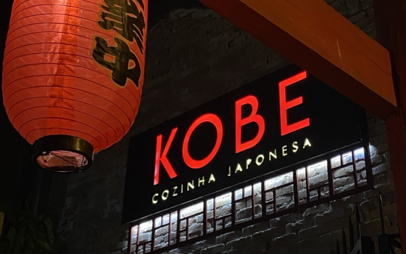
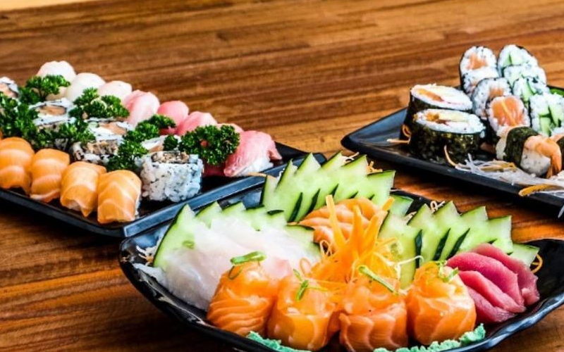
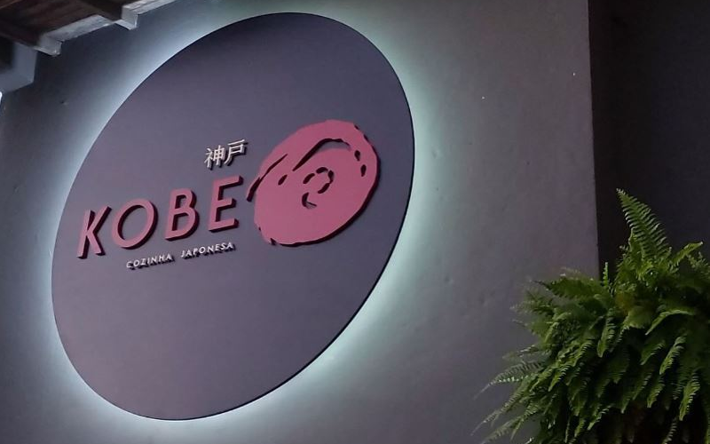

BEM VINDO AO KOBETe convidamos a saborear a autêntica culinária japonesa em Porto Alegre.
|
|
|  |
O RESTAURANTECom um menu clássico e muito variado, pretendemos resgatar as principais características da tradicional gastronomia do Japão Veja mais |
MENUCom um menu clássico e muito variado, resgatamos as principais características da tradicional gastronomia do Japão Veja mais |
 |
RESERVAFaça sua reserva para vivenciar uma experiência com a autêntica gastronimia japonesa. Veja mais |
 |